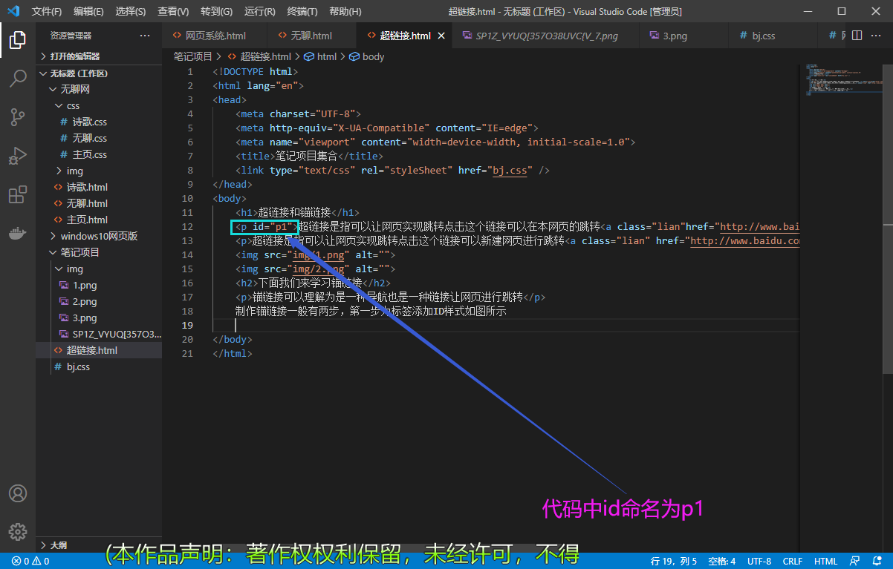

锚链接可以理解为是一种导航也是一种链接让网页进行跳转,制作锚链接一般有两步，第一步为标签添加ID样式如图所示:
第二步在href=" "这里在#号后添加ID的名字（比如说#p1）如图所示：

background-image: url();(添加背景图片)
align="center"(文字居中)
text-align:center ; 文字居中*/
font-size:1px;/*文字大小*/
float：left； /*浮动*/
头:hedader
内容:content/container
尾：footer
导航：nav
侧边栏：sidebar
栏目：column
页面外围控制整体布局宽度：wrapper
左、 右 、中：left、right、center
(登录条：loginbar)
标志：logo
广告：banner
页面主体：main
热点：hot
新闻：news
下载：download
子导航：subnav
搜索：search
友情链接：friendlink
页脚：footer
版权：copyright
滚动：scroll
内容：content
标签：tags
文章列表：list
提示信息：msg
小技巧：tips
栏目标题：title
加入：joinus
指南：guide
服务：service
注册:regsiter
向右排列：dislpay: inline-block 可以是文字（图片）向右排列
位移：transform: translateY(201px) translateX(201px) 【Y(上下)、X（左右）X轴位移】
单行注释：//这是单行注释 快捷键：CTRL+/（在要备注是的代码前面添加两个反斜杠：//单行注释标签）
多行注释注释：/**/这是单行注释 快捷键：CTRL+Shift+A（在要备注是的代码前面添加/*多行注释标签*/）
个人QQ号:2777368400如果代码有什么错误的地方还欢迎大家来指正错误呀